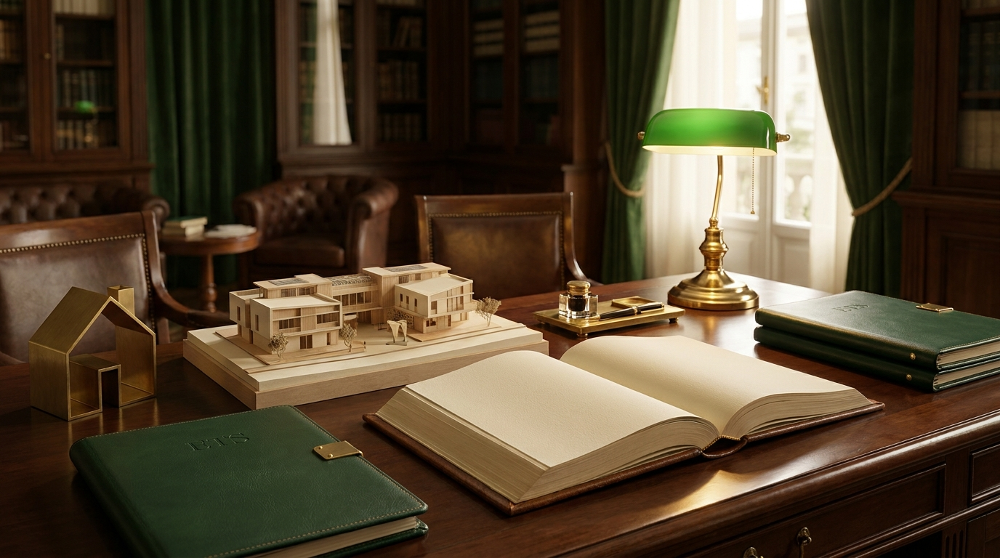

Piano casa e Terzo settore: il nodo delle garanzie pubbliche agli ETS
Le proposte di modifica al cosiddetto Piano casa ipotizzano un ruolo crescente per gli enti del Terzo settore, con accesso a beni demaniali e garanzie pubbliche per progetti di housing sociale. Si tratta di misure ancora in discussione, non di diritto vigente. Per gli ETS interessati restano centrali i vincoli statutari, la scelta del veicolo e la disciplina europea sugli aiuti di Stato.

Il contesto
Nel dibattito parlamentare sulle misure per l'emergenza abitativa si discutono proposte che amplierebbero il perimetro del Piano casa, coinvolgendo Agenzia del Demanio, Sace ed enti del Terzo settore (ETS).
È opportuno premettere un punto di metodo: si tratta di emendamenti e proposte in fase di esame, non ancora tradotti in norme vigenti. Al momento della redazione mancano riferimenti definitivi (numero di atto, articolo, testo licenziato). Quanto segue ha quindi natura di inquadramento prospettico, non di analisi di diritto positivo.
Il disegno generale è chiaro: mettere a disposizione patrimonio pubblico e strumenti di garanzia creditizia per progetti di alloggio sociale realizzati anche da soggetti non profit. Sace, in particolare, è società controllata dal Ministero dell'Economia e delle Finanze (MEF), e questo profilo pubblico è decisivo per il tema delle garanzie.
Inquadramento normativo
Il Codice del Terzo settore (D.lgs. 117/2017) include tra le attività di interesse generale, all'art. 5, interventi nel campo dell'edilizia residenziale pubblica e dell'alloggio sociale. La collocazione esatta dell'attività rilevante va verificata sul testo vigente e raccordata alla nozione di alloggio sociale di cui al D.M. 22 aprile 2008.
Quanto all'uso di beni pubblici, occorre distinguere due piani spesso confusi. L'art. 71 del Codice riguarda la sede e i locali utilizzati dagli ETS. La concessione di immobili demaniali a canone agevolato o simbolico per progetti di housing discende invece da una pluralità di fonti: le norme sul federalismo demaniale (D.lgs. 85/2010) e quelle sulla valorizzazione e dismissione del patrimonio pubblico. Non esiste un automatismo: l'accesso al bene segue procedure selettive e presuppone un progetto coerente con la destinazione.
Il vero nodo tecnico riguarda gli aiuti di Stato. Una garanzia pubblica concessa da Sace a favore di un ETS costituisce, in linea di principio, vantaggio selettivo potenzialmente rilevante ai sensi dell'art. 107 TFUE. La compatibilità va costruita su tre direttrici: il regime de minimis (Reg. UE 2023/2831), che esenta gli aiuti di importo contenuto; la disciplina dei servizi di interesse economico generale (SIEG), applicabile quando l'attività abitativa è qualificabile come servizio affidato con obblighi pubblici; oppure la dimostrazione che la garanzia è prestata a condizioni di mercato, e quindi non costituisce aiuto. La scelta della direttrice non è neutra e va decisa a monte.
Implicazioni pratiche
Per un ETS che intenda partecipare, il vincolo di non distribuzione degli utili (art. 8 CTS) e gli obblighi di rendicontazione rafforzata non sono adempimenti formali: incidono sulla struttura stessa dell'operazione.
Un progetto di housing con garanzie creditizie genera flussi economici. Se l'attività ha carattere d'impresa stabile, può essere più coerente strutturare un'impresa sociale (D.lgs. 112/2017), che ammette una limitata distribuzione di utili entro soglie definite e si presta meglio al dialogo con il sistema bancario. In alternativa, l'ETS può separare contabilmente l'attività e, se necessario, costituire un veicolo dedicato. La scelta condiziona accesso al credito, fiscalità e tenuta dei vincoli statutari.
Va inoltre considerato il profilo di responsabilità degli amministratori. Assumere garanzie e indebitamento espone l'organo gestorio a valutazioni di diligenza nella sostenibilità finanziaria del progetto: una sopravvalutazione dei ricavi attesi non è solo un errore gestionale, ma un possibile titolo di responsabilità.
Cosa fare in concreto
- Verificate l'iscrizione e l'oggetto sociale. Controllate che lo statuto, già iscritto al RUNTS, contempli espressamente l'attività di alloggio sociale tra quelle di interesse generale ex art. 5 CTS.
- Scegliete il veicolo a monte. Valutate se operare come ETS con contabilità separata o come impresa sociale, in funzione dei flussi economici e del rapporto con i finanziatori.
- Mappate il patrimonio disponibile. Individuate gli immobili demaniali o degli enti territoriali astrattamente assegnabili e le relative procedure, senza presumere automatismi.
- Impostate l'analisi aiuti di Stato. Definite fin dall'inizio se la garanzia rientri nel de minimis, in un affidamento SIEG o in condizioni di mercato.
- Costruite un piano economico verificabile. Predisponete una previsione finanziaria prudente, documentata negli atti dell'organo amministrativo a tutela della diligenza gestoria.
Disclaimer
Contributo informativo a cura di Tamburro & Partners - Avv. Giuseppe Tamburro. Non costituisce parere legale.
Ogni ente del terzo settore ha la sua storia.
Se rappresenti un ETS e vuoi un confronto su governance, RUNTS o fiscalità, scrivi allo studio. Ti rispondiamo entro un giorno lavorativo.